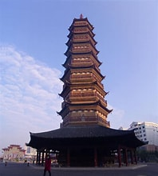
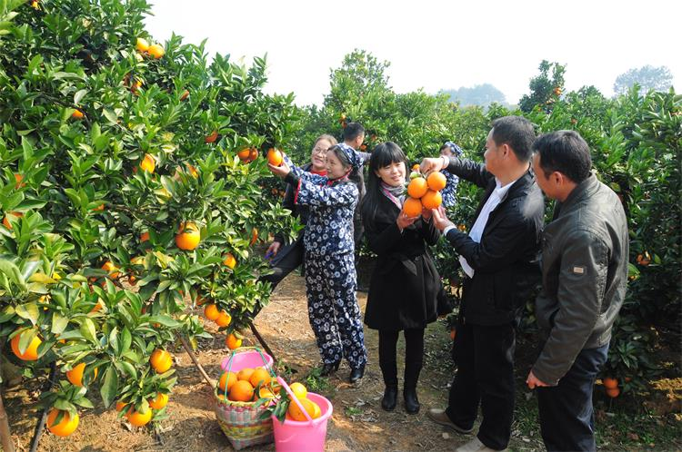

信丰县是中国江西省赣州市所辖的一个县。总面积为2878平方公里，县政府驻嘉定镇市政路。县名取“人信物丰、因信而丰”之意，是赣南地区兼具生态、文化与红色底蕴的重要县域。
历史沿革
唐朝永淳元年（公元682年）析南康县置南安县，是为信丰建县之始。天宝元年（公元724年），因与泉州南安县同名，朝廷下诏改名“信丰”，取“人信物丰”的美好寓意，此县名沿用至今，已有1300余年历史。
红色文化与革命遗迹

信丰是赣南革命根据地的重要组成部分，是中央苏区反“围剿”的关键区域之一。境内保存有多处珍贵红色旧址，如赣南游击词主题园、上乐塔（红军通讯联络旧址）、油山革命旧址群等。近年来，信丰县将红色历史与旅游深度融合，开发了“重走游击路”“红色故事讲堂”等沉浸式红色教育线路，让红色基因代代相传。
自然与景点
信丰的景点兼具历史底蕴与自然之美：千年古塔大圣寺塔（建于北宋，为江南现存最高宋塔）、城市地标信丰阁（可俯瞰全城风光）、清代古桥玉带桥（被誉为“江南第一桥”），以及谷山·坪地山森林旅游区（集森林康养、田园采摘、乡村度假于一体）。无论是追寻历史足迹，还是享受自然休闲，都能找到适宜的去处。
美食与文化
信丰是全国著名的“脐橙之乡”，脐橙种植面积超30万亩，年产量达50万吨，是县域经济的核心支柱产业。当地已形成“种植-加工-销售-文旅”完整产业链，每年11月至12月的“脐橙采摘节”，吸引数十万游客前来体验橙乡风情。
信丰还保留着浓郁的客家文化与本地民俗：客家围屋、客家山歌、传统竹编手艺等代代传承，其中信丰萝卜饺（以本地白萝卜为馅，皮薄馅嫩）、信丰米酒（古法酿造，酒香醇厚）等非遗美食，更是当地饮食文化的代表。县内众多农庄、民宿推出“脐橙宴”“客家宴”，让游客全方位感受信丰风味。